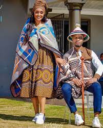
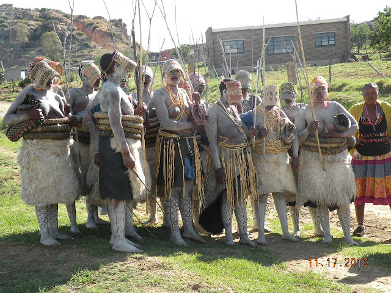
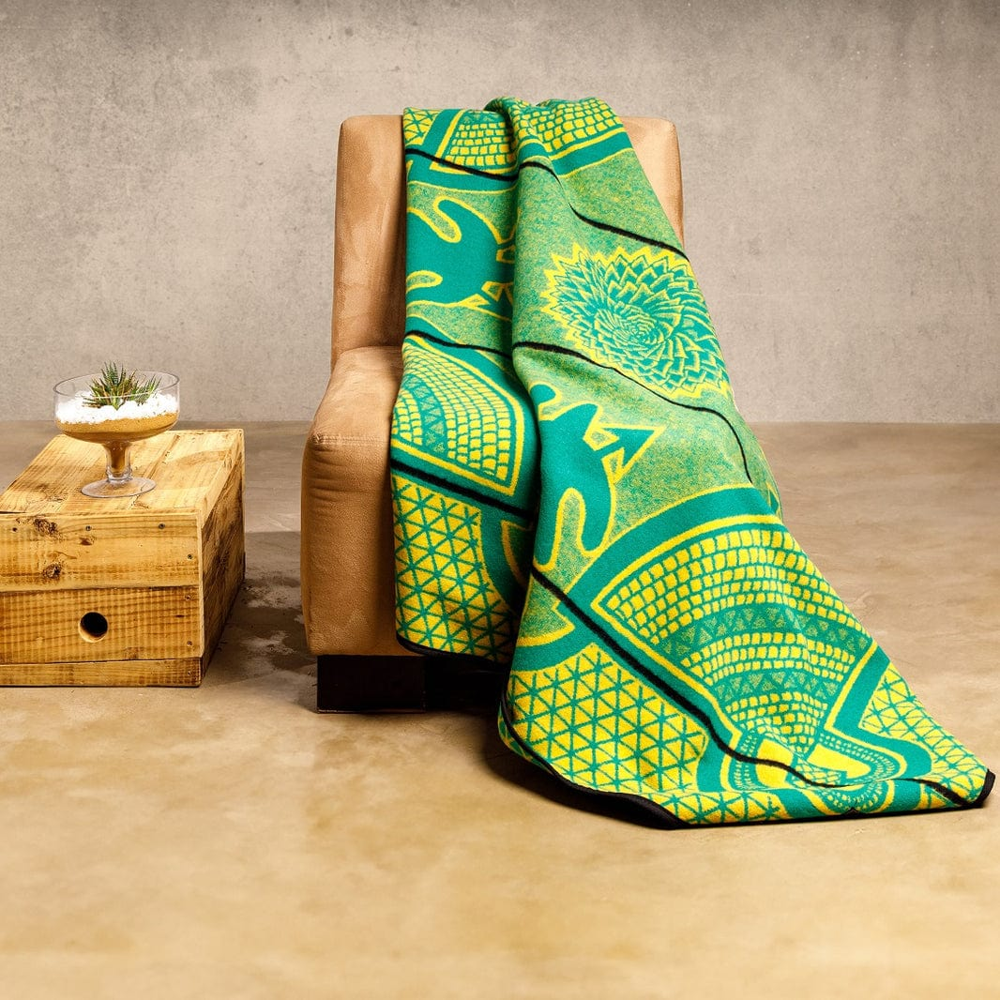

Traditional Basotho Clothes
1.Thethana
Thethana is one of the traditional attires that is made specially for women and girls.
It is often made from colourful fabrics often with printed patterns and vibrant designs, they are worn during traditional ceremonies ,
festivals such as Moshoeshoe's day whereby when they are worn on that day they portray a meaningful meaning in our daily life.
2.Seshoeshoe
Seshoeshoe is a man made dress that is made from dyed cotton fabric with floral prints with different kinds of colours.
Seshoeshoe dresses are usually long in size, they are worn mostly in wedding, cultural celebrations such as Women's month.
Not only are they worn in funerals they are also worn in official national events.
3.Tsheha

Tsheha is worn by boys during initiation rites,
often includes special blankets, beads and body paint called letsoku.
4.Makoko
Lekoko is usually worn by women or girls during initiation rites,
when worn women are smeared by a white body paint.
5.Mokorotlo

A cone-shaped hat made from woven straw.
Resembles the shape of Mount Qiloane, a national symbol.
Worn by both men and women, especially during formal or traditional events.
6.Seanamarena
Seanamarena is the most iconic piece of Basotho attire.
Made of thick wool, often decorated with symbolic patterns.
Worn over the shoulders like a cloak for warmth and cultural pride.
Different designs mark status, family, or ceremonies.
Worn over the shoulders like a cloak for warmth and cultural pride.
Different designs mark status, family, or ceremonies.
7.Basotho Cloths

This is a cloth that is usually worn by women as a form of identifying
or portraying themselves as Basotho from the other nations.
8.Seteea
This is a traditional attire that is worn by elderly women
9.Tuku ea seshoeshoe
Tuku is one of the Basotho traditional attire that is worn togther with seshoeshoe.
10.Litolobonya
Litolobonya is made from maize meal bag,it is worn during traditional activities.
11.Kharetsana
Kharetsana is made from an animals skin, it is worn by women on their head.
12.Senyepa
Senyepa is a an accessory that is worn on the neck.
It is made of small colorful beads put on a thread.
13.Sefatla

Sefatla is a shoe that is made of leather,
with laces and is traditionally worn by men.
14.Sebeto

A traditional clothing that covers the males skin in cultural practices.
15.Letata

Letata is a Sesotho blanket made from a cow's skin and it is worn by men
16.Lesira

A traditional clothing of Basotho that is used as a cover shield.It is worm by women to hide their faces.
17.Tsoape

Ts'ea is a traditonal attire that is worn by men and boys.
It is worn after they are initiated as a way of continuing the traditions of Basotho.
18.Molianyeoe
Molianyeoe is a traditional Basotho hat that is normally worn by men who are sheperds.
It is made of dry grass.
19.Lethokoa

Lethokoa is a traditional Basotho blanket that is normally worn by sherpeds.
Lethokoa is grey in color.
20.Mose oa lekoko

Normaly made for women and young girls.Made of a cow's skin that is left to the sun to try .
21.Kholokoane

A form of clothing that is worn by women or girls from initiation.Kholokoane has a circular shape,it is worn around the waist.
22.Lipetja

Lipetja is an accessory of Basotho traditional attires that is made of an aninamls skin.
23.Kuane

Kuane is a hat that is worn by Basotho men, it is made of an animals skin.
24.Setipana
Setipana is a traditional Basotho attire that is made of a cows skin.
It is worn by men in the aftenoon.
25.Morepo
Morepo is one of the attires that is worn by women.
It is made of a sheep's skin and left to dry on the sun.
26.Leqapha
Leqapha is worn by men after the intiation perriod.It is red in color
27.Sefaha sa letsopa

This are clay bead neckpieces used by women
28.Lehlosi
This is a Basotho blanket , the chiefs of the Basotho tribe.This blanket was constructed from wild cats or leopard skin .
29.Pokoma
A traditional attire made for young girls,it is worn during a dance called Mokopu.
30.kobo letlalalo la khomo
Made of a cow's skin,most worn by men.It is left to try on the sun in order for it to be worn.
31.Kupa head

A Basotho hat that is worn by sheperds when
32.Litopo

This are a form of shoes that are worn by both men and women.They are mostly worn when farming.
33.Kharetsa
A Basotho blanket that is worn by men
34.Ts`ets`e
A traditional Basotho hat made of grass, it is worn as a shield against the sun.
35.Blanket clothing

A type of clothing made of a blanket as a material.This blanket is used to make different kinds of designs.